Overview
Assignment 3-1 was a massive exploration of ray tracing and its various techniques.
Part 1 is about generating rays from the camera to a place in the world and checking for intersections with triangles and spheres.
Part 2 is about making the checks for intersections more efficient by using a Bounding Volume Hierarchy to divide
our search space nearly in half every time, which would be closer to a O(logn) runtime instead of O(n).
Part 3 is about taking those rays and intersections, and actually calculating the color that should be presented at a pixel.
We use two methods, hemisphere sampling and importance sampling. Hemispere uses random directions in a hemisphere, whereas
importance samples directly in each light's direction.
Part 4 expands upon part 3 by incorporating more than 1 bounce into our images.
Part 5 then helps with efficiency by early terminating our sampling if the color of the pixel is likely to converge.
On a very high level, many of the problems resided in the fact that we must visually debug our code for these assignments.
I found myself noticing differences between my images and the spec's example images, but not knowing what the issue was. For
example, in part 3 I had an issue where I was observing light on the ceiling, but I hadn't implemented more than one light bounce
yet. For whatever reason, I resolved my issue by correcting my f function when calculating the diffuse reflectance. I
admittedly still don't know what was wrong or why it caused the issue I was seeing.
Part 1: Ray Generation and Intersection
- Walk through the ray generation and primitive intersection parts of the rendering pipeline.
-
Essentially what happens is that we need to draw a ray from the camera (user's POV) to the screen.
To do this, we draw a ray from the camera to normalized coords of the image space transposed to our sensor camera space.
We then have to convert these camera space coords into world space coords.
-
To initially get the coords of the image space, we randomly pick many spots (sampling) within a pixel to draw the ray to.
This way, we get a good estimate of the radiance over this pixel and can create a more realistic looking scene.
-
From there, we need to check if our rays are hitting primitive objects (triangle, spheres) in our scene.
Very basically, we check if the ray at any time t along direction d intersects with primitive objects.
I'll explain triangles more in the next section, but for spheres, we can have up to two intersections and we pick the closest one.
- Explain the triangle intersection algorithm you implemented in your own words.
-
I implemented the Möller–Trumbore algorithm since it uses fewer low level operations (1 div, 27 mul, 17 add) to check for
intersections within a triangle. I used Wikipedia's skeleton code for the Möller–Trumbore algorithm and changed some variables
to ones I was more familiar with (i.e. b1 b2 for barycentric coordinates). What it does is make sure that the ray
is not parallel to the triangle. Then it checks barycentric coords of the intersection point and also makes sure that it is
within the triangle. Not specific to the algorithm, but we also had to check that the intersection point was within the near
far clipping planes of the ray.
- Show images with normal shading for a few small .dae files.
 banana.png: checking for proper pixel sampling and camera rays
banana.png: checking for proper pixel sampling and camera rays
|
 CBempty.png: testing Möller–Trumbore triangle intersection
CBempty.png: testing Möller–Trumbore triangle intersection
|
 CBspheres.png: testing sphere intersection
CBspheres.png: testing sphere intersection
|
Part 2: Bounding Volume Hierarchy
- Walk through your BVH construction algorithm. Explain the heuristic you chose for picking the splitting point.
-
Essentially what I do is find the longest axis (x,y,z) and then create a sorted list of all primitives based on that axis' coords.
Then I pick the median primitive and split based on that primitive.
-
I chose to split on the median because it seemed the simplest to implement, but would also result in reasonable performance.
Splitting along the midpoint of an axis can easily
result in an uneven number of primitives on one end. Splitting on the average of centroids could result in all primitives on
one end of a split if every primitive had the same coord. Infinite recursion could occur depending on implementation, if all
primitives lie on only one side of the split. I had to go back and fix my code, since I was accounting for if all
primitives had the same coord on an axis and so the pivot wouldn't actually split. I had to instead split on the
index of the vector, not the coord values of the primitives themselves.
- Show images with normal shading for a few large .dae files that you can only render with BVH acceleration.
|
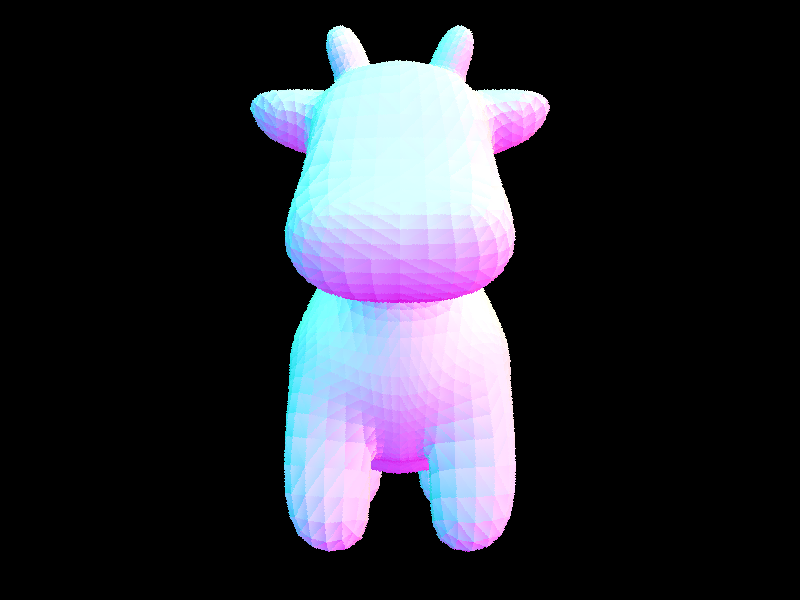
cow.png: 6,000 primitives, 38 seconds -> 0.14 seconds
|
|
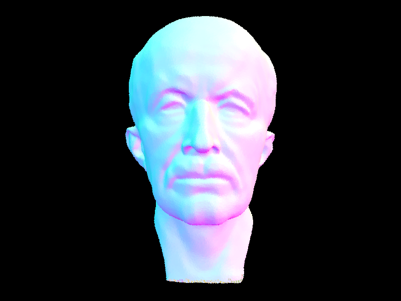
maxplanck.png: 51,000 primitives, 375 seconds -> 0.16
|
|
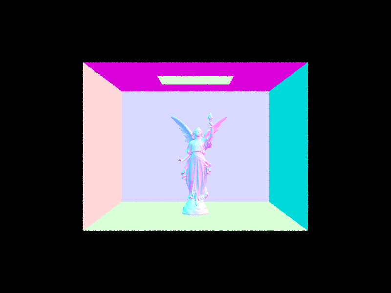
CBlucy.png: 134,000 primitives, 992 seconds -> 0.14
|
-
Compare rendering times on a few scenes with moderately complex geometries with and without BVH acceleration.
Present your results in a one-paragraph analysis.
-
Without BVH acceleration, it takes about 38 seconds to render the cow.dae on my machine with 8 threads.
With, it took 0.14 seconds.
We bring the intersection tests per ray down from 725 to 2.4.
-
maxplanck.dae has ~51,000 primitives and goes from 375 seconds to 0.16.
We bring the intersection tests per ray down from 7,151 to 3.
-
CBlucy.dae has ~134,000 primitives and goes from 992 seconds to 0.14 seconds.
We bring the intersection tests per ray down from 19,660 to 3.
-
It's interesting that the time doesn't come down linearly. BVH should get us O(log(n)) runtime, but it
appears to do much better than that, bringing each of my tests down to almost a tenth of a second. Perhaps
on even more complex scenes, we'd be able to see the O(log(n)) runtime difference.
Part 3: Direct Illumination
- Walk through both implementations of the direct lighting function.
-
Essentially what both implementations do is receive a ray from the camera to a point in the scene (intersection). They then
check for light sources and return what color that pixel should be. The difference is that the hemisphere version
randomly samples directions to check based on a uniform hemisphere distribution. It then averages out all samples by dividing
the sum of the light sources' returned values (slightly altered because of Lambert's law and the angle of the light)
by the number of samples and the probability of getting that sample (1/2PI). The importance sampling version instead
samples directly from light sources instead of guessing where the lights could be. With area lights, we sample random
points on the area light, but with point lights, there's only one spot to sample. The sum is then again averaged based on
the probability of getting that sample.
- Show some images rendered with both implementations of the direct lighting function.
|
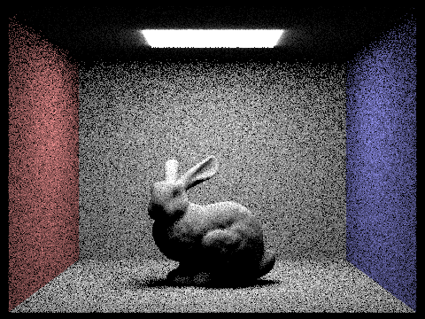
CBbunny_H_16_8.png: Hemisphere Sampling, 16 rays/pixel, 8 samples/area light
|
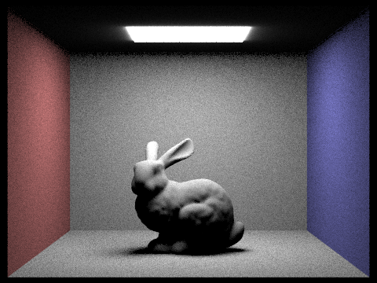
CBbunny_H_64_32.png: Hemisphere Sampling, 64 rays/pixel, 32 samples/area light
|
|
bunny_1_1.png: Importance Sampling, 1 rays/pixel, 1 samples/area light
|
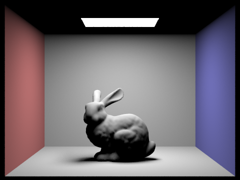
bunny_64_32.png: Importance Sampling, 64 rays/pixel, 32 samples/area light
|
- Focus on one particular scene with at least one area light and compare the noise levels in soft shadows when rendering with 1, 4, 16, and 64 light rays (the -l flag) and with 1 sample per pixel (the -s flag) using light sampling, not uniform hemisphere sampling.
|
CBbunny_1_1.png: Importance Sampling, 1 rays/pixel, 1 samples/area light
|
CBbunny_1_4.png: Importance Sampling, 1 rays/pixel, 4 samples/area light
|
|
CBbunny_1_16.png: Importance Sampling, 1 rays/pixel, 16 samples/area light
|
CBbunny_1_64.png: Importance Sampling, 1 rays/pixel, 64 samples/area light
|
- Compare the results between uniform hemisphere sampling and lighting sampling in a one-paragraph analysis.
-
Lighting sampling should be much more efficient since there should be less wasted computation, as
uniform hemisphere sampling casts rays in random directions as opposed to directly to light sources. The time
difference shouldn't be massive assuming the same amount of samples. It's that it will take more samples with
uniform hemisphere sampling to get a similar looking picture since its rays can be wasted. CBbunny_H_64_32 is
only slightly more grainy than bunny_64_32, which shows that the uniform hemisphere sampling can converge. The
difference is between CBbunny_H_16_8 and bunny_1_1. Both have noise, however the uniform sampling one has noise
all over, whereas the importance sampling one has its noise concentrated where shadows would be. The importance
sampling one also did it in far fewer samples.
Part 4: Global Illumination
- Walk through your implementation of the indirect lighting function.
-
At a high level, all we do is add additional (more than 1) bounces of light to the already existing lighting
solution (0 bounces, 1 bounce). What this mainly does is add soft shadows, since light can now bounce "around" objects into previously
dark areas. However, in order to NOT sample infinite bounces and also sample bounces in an unbiased way,
we must probabilistically decide when to stop (terminate). To do this, we play Russian Roulette every time we
try to bounce an additional time. I decided to go with a termination probability of 0.4, as suggested by the spec.
This means that after calculating 1 bounce of light (and every bounce of light after that), we then flip a weighted
coin with a 4/10 chance to stop sampling further bounces of light. On the flip side, we have a 6/10 chance to keep
sampling.
-
The way that light is calculated remains essentially the same as before (since we literally call one_bounce_radiance).
The only thing of note is that the direction that the new bounce is in is randomly sampled under a certain probability
distribution given to us through the get_sample() function. We must account for this and the continuation probability
when calculating the radiance at that pixel.
- Show some images rendered with global (direct and indirect) illumination. Use 1024 samples per pixel.
|
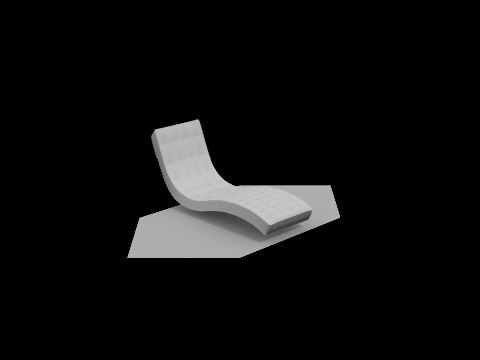
bench_1024_4_4_global.png
|
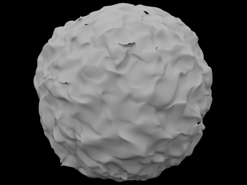
blob_1024_4_4_global.png
|
|
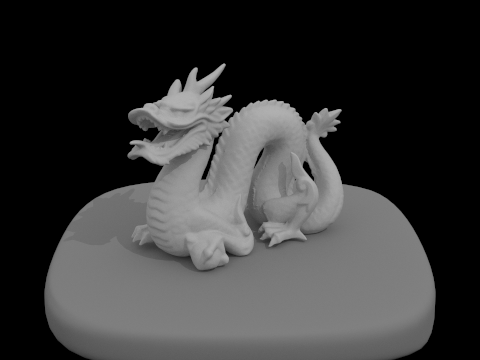
dragon_1024_4_4_global.png
|
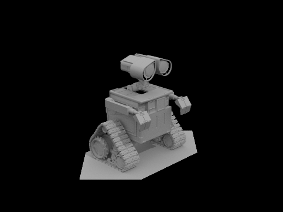
wall-e_1024_4_4_global.png
|
-
Pick one scene and compare rendered views first with only direct illumination, then only indirect illumination.
Use 1024 samples per pixel. (You will have to edit PathTracer::at_least_one_bounce_radiance(...) in your code to generate
these views.)
-
I figured this scene should be pretty interesting since there are multiple objects in the scene to block
light. All the images look right to me, but just to spell it out, the direct lighting image shows where light would be
after one bounce (plus the light going directly into the camera at 0 bounces). The indirect lighting image shows how
light can bounce "around" objects. We can see in the global lighting version that the dark shadows in the direct
lighting version are now lighter, since the indirect lighting has now been incorporated. We can also see any light
that bounced off a surface and then towards the ceiling, since the ceiling is now lit up.
|
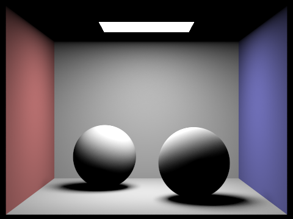
spheres_1024_4_1_direct.png: only direct lighting (i.e. 0 + 1 bounces)
|
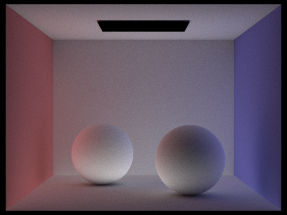
spheres_1024_4_4_indirect.png: only indirect lighting (i.e. 2-4 bounces)
|
|
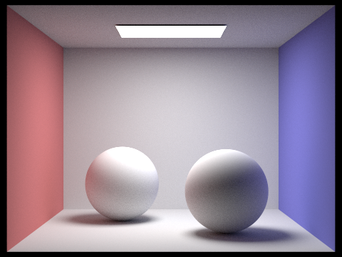
spheres_1024_4_4_global.png: both direct and indirect lighting, aka global
|
-
For CBbunny.dae, compare rendered views with max_ray_depth set to 0, 1, 2, 3, and 100 (the -m flag). Use 1024 samples
per pixel.
-
These images illustrate a similar point to the previous section. As we increase bounces of light, we end up with
softer shadows and light on the ceiling. Beyond 2 bounces however, it's hard to see any difference. The shadows should
become softer, but Russian Roulette keeps the number of bounces relatively low. With a max_ray_depth of 100,
there would only be a probability of (6/10)^100 (in my implementation) of actually reaching the 100th bounce due to the recursive application
of the continuation/termination probability.
|
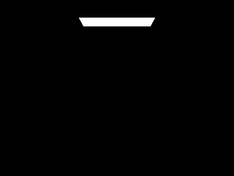
CBbunny_1024_4_0_global.png: max_ray_depth = 0
|
CBbunny_1024_4_1_global.png: max_ray_depth = 1
|
|
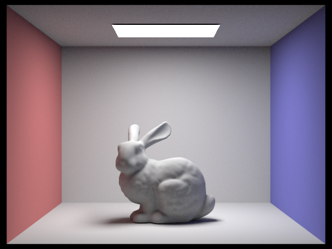
CBbunny_1024_4_2_global.png: max_ray_depth = 2
|
CBbunny_1024_4_3_global.png: max_ray_depth = 3
|
|
CBbunny_1024_4_100_global.png: max_ray_depth = 100
|
-
Pick one scene and compare rendered views with various sample-per-pixel rates, including at least 1, 2, 4, 8, 16, 64,
and 1024. Use 4 light rays.
-
If you're an impatient person, it'd be hard to justify the amount of time it takes to achieve the best quality
seen at the bottom here, though it's impossible to deny the increase in visual quality. It clearly requires a lot of
samples-per-pixel to get a quality looking image. The amount of time spent and the increase in quality don't increase
linearly, in my opinion. It takes exponentially longer for an exponential amount of samples (duh). However, I'd argue that
the quality increase from 64 samples to 1024 samples is noticeable, but doesn't
provide an exponential increase in quality.
|
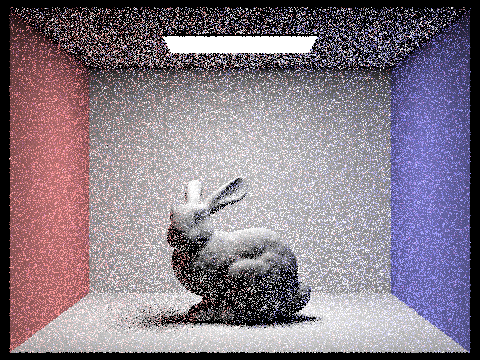
CBbunny_1_4_4_global.png: sample-per-pixel rate = 1
|
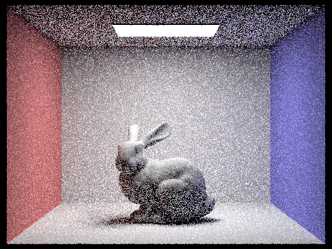
CBbunny_2_4_4_global.png: sample-per-pixel rate = 2
|
|
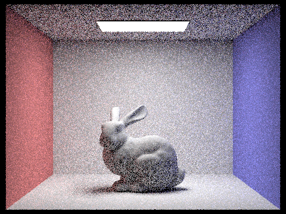
CBbunny_4_4_4_global.png: sample-per-pixel rate = 4
|
CBbunny_8_4_4_global.png: sample-per-pixel rate = 8
|
|
CBbunny_16_4_4_global.png: sample-per-pixel rate = 16
|
CBbunny_64_4_4_global.png: sample-per-pixel rate = 64
|
|
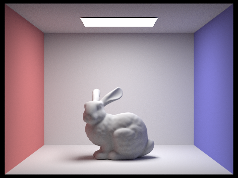
CBbunny_1024_4_4_global.png: sample-per-pixel rate = 1024
|
Part 5: Adaptive Sampling
- Walk through your implementation of the adaptive sampling.
-
Essentially what I do is keep a running sum of every sample's illuminance and a sum of the illuminance squared
(s1 and s2 respectively from the spec). With those values, we can calculate the mean and variance in order to then
calculate each pixel's convergence. Once a pixel has converged (come close enough to its proper ending value)
with 95% confidence, we will terminate the sampling early, in order to save computation time. Also as suggested
by the spec, I only check the convergence of a pixel every "samplesPerBatch" samples so we waste less compute power computing
"when to stop" instead of computing the actual work of sampling. Finally, that early number of samples is saved to
the sampleCountBuffer so we can create a heatmap of the relative samples needed for each pixel in the image.
- Pick one scene and render it with at least 2048 samples per pixel. Show a good sampling rate image with clearly visible differences in sampling rate over various regions and pixels. Include both your sample rate image, which shows your how your adaptive sampling changes depending on which part of the image you are rendering, and your noise-free rendered result. Use 1 sample per light and at least 5 for max ray depth.
|
bunny.png: 2048 samples/pixel, 64 samples/batch, 0.05 max tolerance, 1 sample/light, 5 max-ray-depth
|
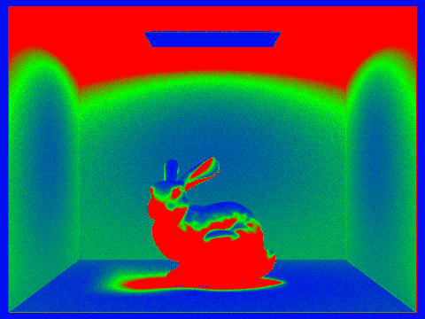
bunny_rate.png: heatmap of where samples are concentrated
|
Link to Project 3 webpage